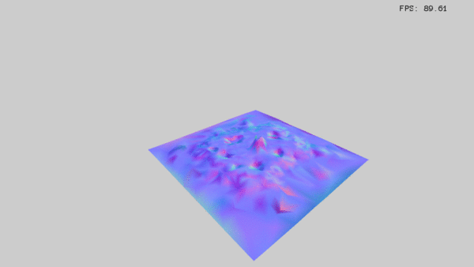
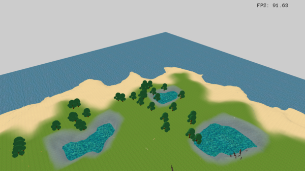

Terrain generation
Map generation
Geometry
La première étape est de segmenter la carte afin de définir plusieurs régions homogènes.
Pour effectuer un découpage géométrique qui n'apparaisse pas de manière flagrante aux yeux d'un observateur, une bonne façon de faire est de construire un diagramme de Voronoi. En configurant de manière correcte les seeds de départ, la construction du diagramme permet d'obtenir une subdivision peu ou prou uniforme de la carte selon une géométrie complexe.

Rabbit mesh
Geography
Une fois la géométrie de la carte définie, il reste maintenant à affecter à chaque cellule du diagramme de Voronoi un environnement (un Biome).
La carte obtenue doit cependant apparaître cohérente. Pour ce faire, on construit les règles de génération de sorte à ce que la carte induite puisse être vue comme celle d'un environnement vraisemblable. Les règles utilisées sont dans les grandes lignes :
- Les bords de la carte sont de la mer (nous nous sommes limités à une île)
- Le centre de la carte est préférentiellement de la terre
- La terre jouxtant la mer est du sable
- L'intérieur de l'île peut contenir des lacs et des montagnes.
La diagramme précédent devient donc la carte suivante, avec les correspondances couleur suivantes :
- Bleu foncé : Mer
- Jaune: Sable
- Vert: Plaines
- Bleu clair: Lac
- Rouge: Montagne

Rabbit mesh
Height Map
Pour la génération de la carte, on ne peut pas, comme dans certaines approches naïves de génération de carte topographique (Height Map) se contenter d'un simple bruit cohérent (Par exemple le bruit de Perlin). En effet, bien que le bruit cohérent permette d'obtenir un relief continu, on ne peut pas contrôler la forme du bruit généré, et donc s'assurer que le relief généré correspond à la carte précédement générée.
On s'inspire cependant de la technique de génération de bruit cohérent que l'on contrôle à l'aide de la carte. (Un lecteur peu familier avec les techniques de génération est invité à se renseigner sur la génération de bruit de Perlin afin de comprendre la suite de cette sous-section).
Dans la construction des octaves constituant le bruit, on va contrôler les valeurs du bruits tirées ainsi que l'interpolation sur chaque octave à l'aide de la carte. Par exemple, si le position d'un point au sein d'une octave est dans la mer, sa valeur sera tirée dans une plage de valeurs négatives, alors que si c'est un point correspondant à une plaine, on s'assurera que sa valeur est positive (et petite). On contrôle ensuite la fonction d'interpolation sur l'octave pareillement en fonction de biomes pour prendre en compte leur étendue géographique. Par exemple, une montagne aura une influence très locale, alors qu'une plaine pourra éventuellement s'étendre.
Octave 1:

Rabbit mesh
Octave 2:
Rabbit mesh
...
Ceci nous permet d'obtenir un bruit cohérent et en accord avec la carte sous-jacente. Les résultats de ce calcul de Height Map peuvent être visibles dans les captures d'écran de la partie Rendu.
Rendu du terrain
Rendu primaire
Cette première version de l'île correspond à une élévation simple de la carte selon les hauteurs diagrammes de Voronoi triangularisés de manière grossière.
Le plan orange délimite le niveau de la mer.

Rabbit mesh
Tessellation et Levels of Details
La "Tessellation", ou "maillage" dans la langue de Vercingétorix, consiste en la construction d'un ensemble de triangle pour représenter le contour d'un objet tridimensionnel. Cette étape est particulièrement importante dans le monde de l'informatique graphique car les principales primitives graphiques permettent d'afficher des triangles (aussi bien sous OpenGL que sous CUDA).
La dernière version d'OpenGl, à savoir OpenGL4, apporte de multiples améliorations et extensions, dont les "Tessellation Shaders". Ces derniers permettent de déporter le calcul du maillage d'un objet en trois dimensions vers la carte graphique (GPU). Cela permet de gagner en performance, et les primitives offertes permettent de "déléguer" ledit calcul à un algorithme inclus dans OpenGL4.
Ainsi, grâce à l'implémentation de "Tessellation Shaders", notre maillage est raffiné (chaque triangle issu de la triangulation primaire du diagramme de Voronoi est subdivisé en plusieurs dizaines, voire centaines, de triangles). Cela permet d'obtenir une carte tridimensionnelle infiniment plus détaillée, et de lui appliquer une carte des hauteurs échantillonnée avec une grande précision. Le monde tridimensionnel généré tend vers le réalisme par le biais de la topographie détaillée obtenue par le biais du raffinement du maillage.
Ci-dessous, on peut voir le raffinement du maillage par incrémentation du coefficient de "Tessellation". Plus ce coefficient est important, plus les triangles initiaux sont subdivisés, et plus la carte gagne en détails.
Rabbit mesh
Un autre avantage des "Tessellation Shaders" est qu'ils permettent de gérer le "Level of Details" (Niveau de Détails) sur le GPU. En quelques mots, la gestion du "LoD" consiste à adapter le raffinement du maillage d'un objet tridimensionnel en fonction de la distance à la "caméra" (le point de l'espace à partir duquel la scène est dessinée et rendue) de ce dernier.
Un exemple sera sûrement plus parlant. Considérons le lapin ci-dessous, ou plutôt les différents rendus de ce même lapin.
Rabbit mesh
Selon le degré de raffinement (en d'autres termes le nombre de triangles du maillage) utilisé lors du dessin du dit léporidé, il est plus ou moins détaillé. L'idée centrale est d'utiliser la version très détaillée lorsque notre petit mangeur de carottes est au premier plan de la scène, et la version "cubique" (ou Picassienne) lorsqu'il est en arrière-plan. Cela n'aura que peu d'impact pour l'utilisateur, qui, vraisemblablement, ne focalisera pas son attention sur un détail de l'arrière-plan. Néanmoins, un maillage moins détaillé implique un temps de calcul moindre (ici, on passe de presque 70000 triangles à à peine 80...), ce qui augmente la fluidité et la rapidité d'exécution du programme (objectif "60FPS").
On peut voir l'impact de la gestion du "LoD" sur le monde tridimensionnel généré : plus on se rapproche du "cratère" (un lac en devenir), plus ce dernier est détaillé et lissé.
Rabbit mesh
Texturisation
Malgré le fait que la résolution ait été augmentée par la Tessellation, la frontière des biomes est toujours définie par le diagramme de Voronoi.
Il faut donc visuellement cacher ces lignes droites qui limitent les diagrammes de Voronoi au niveau du rendu en effectuant un mélange (blending) de textures de sorte à avoir des transitions continues d'un biome à l'autre.
Pour ce faire, on calcule, en plus de la Height Map une Texture Map. Celle-ci contient les informations nécessaires au blending de texture en chaque point sous la forme d'un ensemble de coefficients qui indiquera en un ensemble de points échantillonnés quelle proportion de quelle texture appliquer.

Rabbit mesh
Ajout de l'eau
Un point important pour le réalisme de la carte est la gestion des biomes aqueux.
Ajout de la mer
La mer est simplement définie par un plan texturé à côte 0. Outre la simplicité d'implémentation, cela donne aux boids un critère pour connaître la présence de la mer puisque cette dernière n'est visible que lorsque la côte du terrain devient négative.
Ajout des lacs
L'ajout des lacs passe par le calcul des composantes connexes parmi l'ensemble des biomes de type Lac. Ensuite, pour chaque composante connexe, on calcule la hauteur moyenne du lac, ce qui permet, à l'aide de l'information de la taille des cellules de Voronoi sous-jacentes, d'ajouter un lac aux bonnes dimensions.

Rabbit mesh
Rabbit mesh
Rendu final du terrain
L'ajout d'une skybox à la carte obtenue tout au long des différentes transformations précédemment décrites aboutit au rendu suivant :
Rabbit mesh